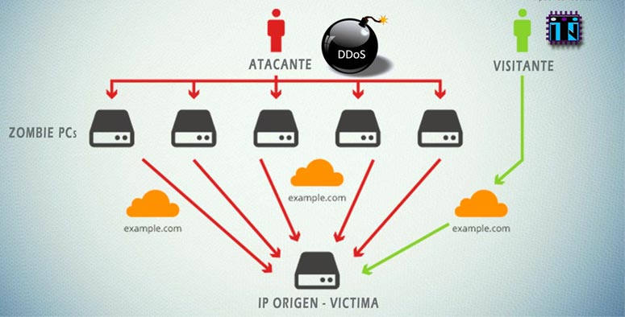
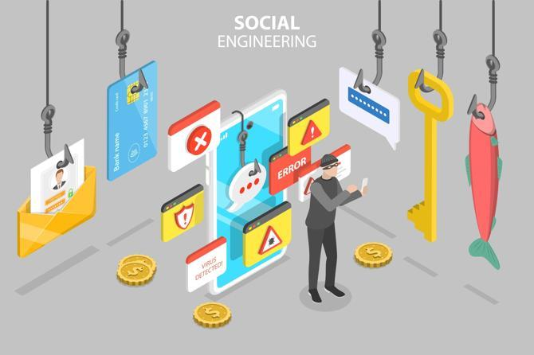

Tipos de Amenazas en Seguridad Informática
Las amenazas a la seguridad informática son diversas y están en constante evolución. A continuación, describimos algunos de los tipos de amenazas más comunes.
Malware
El término malware hace referencia a todo software malicioso diseñado para dañar, explotar o inutilizar computadoras y redes. Entre los tipos de malware se incluyen los virus, gusanos, troyanos, y spyware.
Los virus pueden replicarse y propagarse a otros archivos o sistemas, mientras que los troyanos suelen disfrazarse de software legítimo para engañar a los usuarios e instalar software malicioso.
Phishing
El phishing es una técnica utilizada para obtener información confidencial, como contraseñas o números de tarjetas de crédito, haciéndose pasar por una entidad legítima. Generalmente se lleva a cabo mediante correos electrónicos fraudulentos que aparentan ser de bancos, tiendas en línea u otras instituciones confiables.
Los ataques de phishing son muy comunes y pueden evitarse con una formación adecuada en conciencia de seguridad y prácticas de seguridad como no hacer clic en enlaces sospechosos.
Ataques DDoS (Denegación de Servicio Distribuida)
Los ataques de DDoS tienen como objetivo sobrecargar un servidor o red mediante el envío masivo de solicitudes, provocando que los sistemas se vuelvan lentos o inactivos. Estos ataques son generalmente realizados por múltiples sistemas infectados que actúan de forma coordinada.
Este tipo de ataque puede causar interrupciones significativas en los servicios en línea, afectando la disponibilidad de los recursos.
Ransomware

El ransomware es un tipo de malware que cifra los archivos de un sistema, exigiendo un rescate para restaurar el acceso a la información. Estos ataques pueden ser devastadores, especialmente para empresas y organizaciones que dependen del acceso continuo a sus datos.
Es fundamental tener copias de seguridad regulares y soluciones de seguridad adecuadas para minimizar los efectos del ransomware.
Ingeniería Social
La ingeniería social se basa en la manipulación psicológica para engañar a las personas y hacer que revelen información confidencial. Esto puede ocurrir mediante correos electrónicos, llamadas telefónicas, o incluso en interacciones en persona.
Las técnicas de ingeniería social explotan la confianza de las personas para acceder a datos sensibles sin necesidad de romper sistemas técnicos de seguridad.